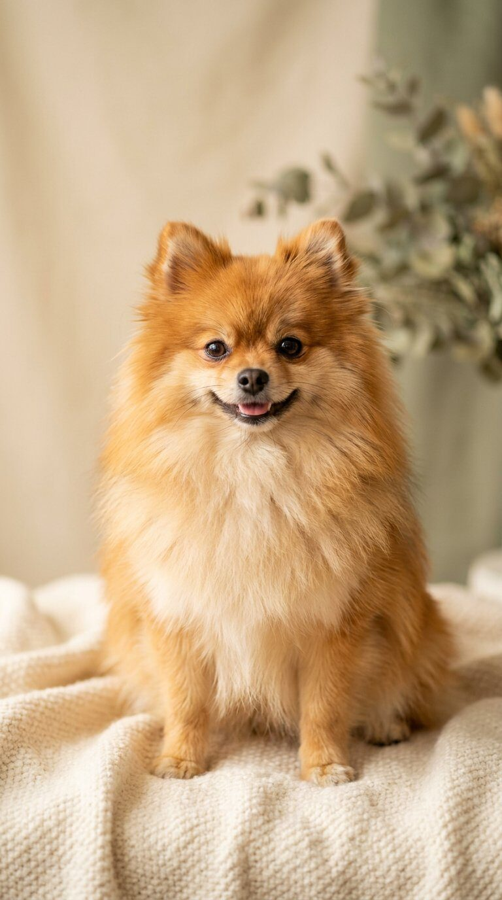

Alle hondenrassen, met trimadvies.
Van Pomeriaan tot Poedel en van Teckel tot Schnauzer: per ras zie je het vachttype, hoe de vacht verzorgd moet worden (scheren, plukken of uitkammen), hoe vaak en wat een trimbeurt ongeveer kost. Prijzen zijn indicaties op basis van openbare tarieflijsten.

Heb je een Pomeriaan? Die dubbele vacht mag je nooit scheren. Lees alles over ontwollen, borstelen en de juiste trimbeurt.
Pomeriaan-gids →Groep 1 · Herdershonden & veedrijvers
44 rassenWerkhonden die gefokt zijn om vee te hoeden en te drijven — van Border Collie tot Duitse Herder.
Geen rassen gevonden met deze filters.
Groep 2 · Pinschers, Schnauzers & Molossers
53 rassenPinschers, Schnauzers, Molossers en Sennenhonden: bewakers en boerderijhonden, vaak met dubbele vacht.
Geen rassen gevonden met deze filters.
Groep 3 · Terriërs
34 rassenTerriërs: dapper en vaak ruwharig. Vandaar de plukbeurten.
Geen rassen gevonden met deze filters.
Groep 4 · Teckels
9 rassenTeckels (dashonden) in drie vachttypen en drie formaten.
Geen rassen gevonden met deze filters.
Groep 5 · Spitzen & oertypen
50 rassenSpitzen en oertypen: dubbele vachten die je uitkamt en nooit scheert.
Geen rassen gevonden met deze filters.
Groep 6 · Lopende & zweethonden
64 rassenLopende honden en zweethonden: meestal kortharig en onderhoudsarm.
Geen rassen gevonden met deze filters.
Groep 7 · Staande honden
32 rassenStaande honden: pointers en setters, gefokt voor de jacht.
Geen rassen gevonden met deze filters.
Groep 8 · Retrievers, Spaniëls & Waterhonden
22 rassenRetrievers, spaniëls en waterhonden: de klassiekers van het gezin.
Geen rassen gevonden met deze filters.
Groep 9 · Gezelschapshonden
31 rassenGezelschapshonden: de kern van elke trimsalon.
Geen rassen gevonden met deze filters.
Groep 10 · Windhonden
13 rassenWindhonden: slank, snel en elegant.
Geen rassen gevonden met deze filters.
Kruisingen & niet-erkende rassen
25 rassenKruisingen en (nog) niet door de FCI erkende rassen — waaronder de populaire doodles.
Geen rassen gevonden met deze filters.
Sta jij al op de raspagina van jouw specialiteit?
Baasjes zoeken specifiek op ras — "trimsalon pomeriaan Maastricht". Claim je vermelding en wordt gevonden op elke raspagina in jouw plaats.